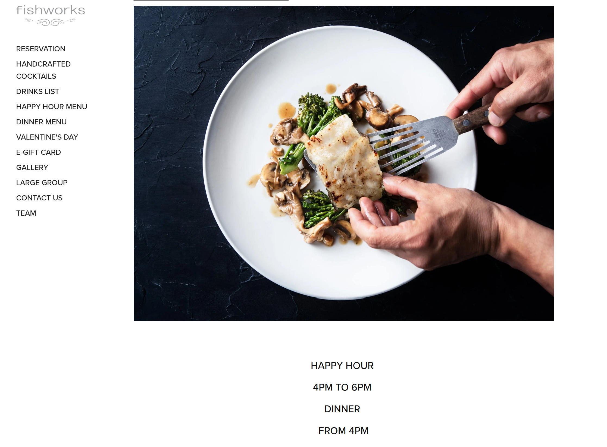
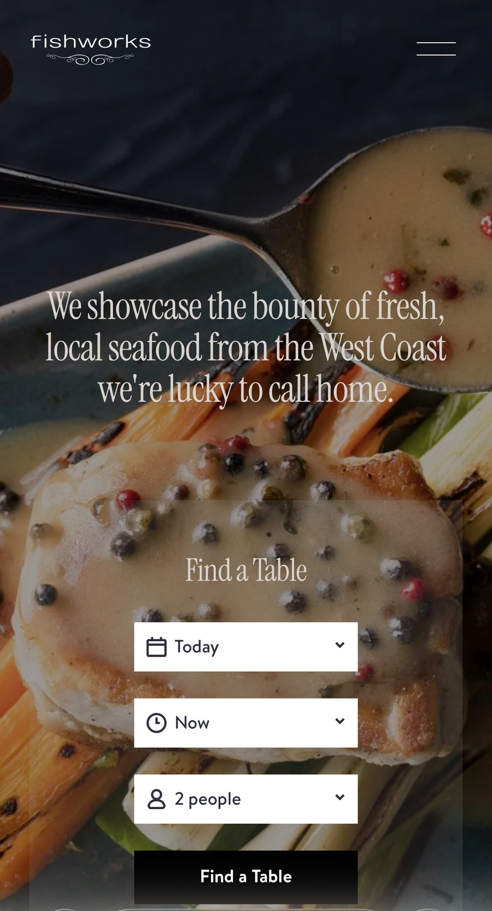
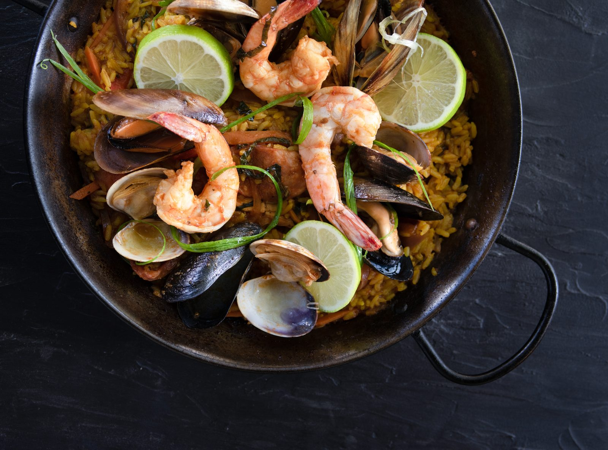
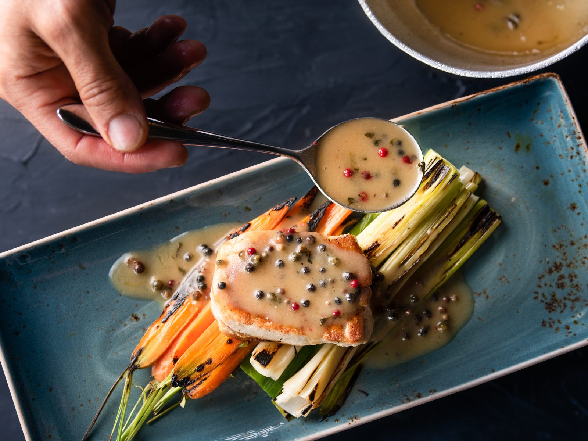
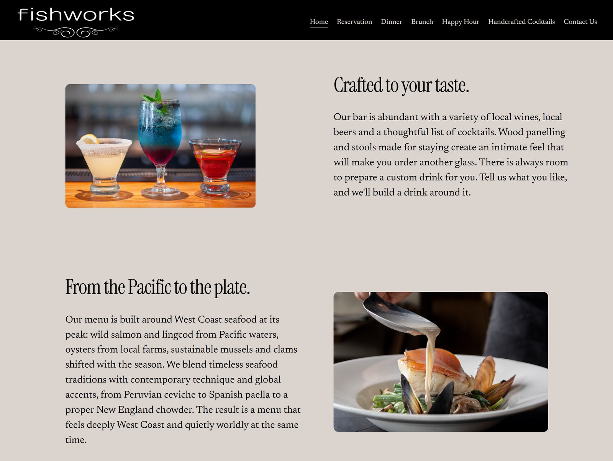
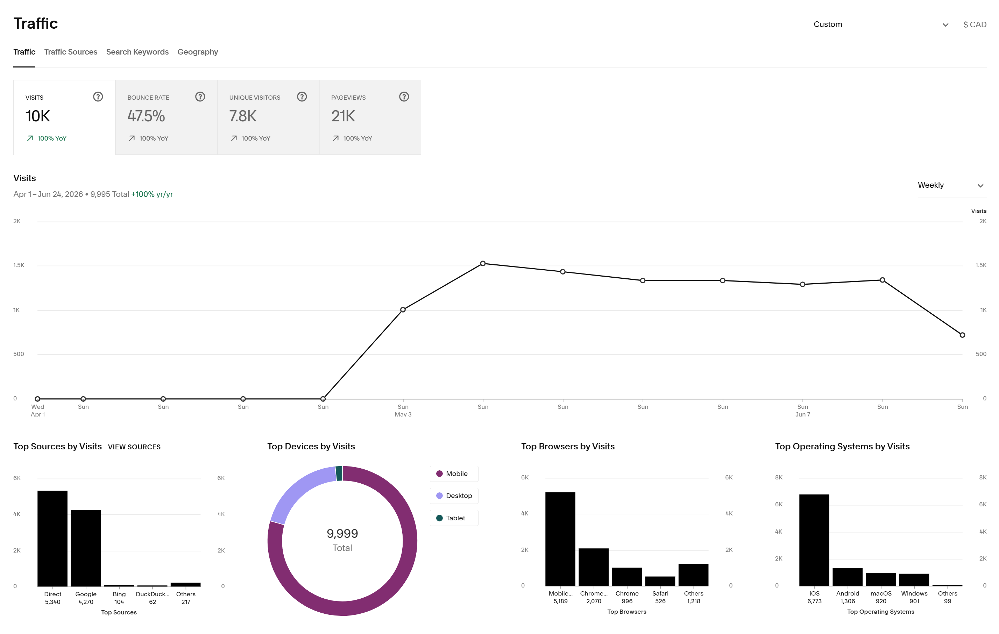

Fishworks is a Vancouver seafood restaurant known for its sustainable sourcing and seasonal menu. The project focused on redesigning the website around a clearer reservation experience while ensuring the digital presence reflected the quality of the dining experience.
The existing website lacked a prominent reservation pathway, making it harder for guests to move from discovery to booking. Working closely with the owner, I redesigned key pages, restructured the navigation, integrated OpenTable, updated menu content and produced new photography to create a more cohesive experience from first impression to reservation.
The existing website treated reservations as one of many navigation options rather than the primary customer goal. Guests needed to navigate through multiple pages before reaching the booking experience, creating unnecessary friction in a task that should feel immediate and intuitive.
The challenge was to redesign the experience around the reservation journey while modernizing the website's content, visual presentation and information architecture.



Before, the reservation link sat partway down a long sidebar of menu and page links. After, a reservation-first homepage brings OpenTable's Find a Table booking to the point of entry on desktop and mobile alike.
Rather than creating a dedicated reservation page, I chose to bring reservations directly into the homepage experience. By integrating OpenTable at the point of entry, the website could better support the restaurant's primary business objective while reducing the number of steps required to complete a booking.
This shift also provided an opportunity to simplify navigation, update content structures and create stronger alignment between photography, menus and reservation interactions.
Working closely with the restaurant owner, I redesigned the website around the reservation journey. Rather than treating reservations as a separate destination, I restructured the navigation and information architecture to make booking a primary action throughout the site. OpenTable was integrated directly into the experience, reducing the distance between discovery and reservation.
The reservation journey: booking stays a primary action throughout the site, with OpenTable integrated directly into the flow.
Product photography and visual content were produced to support each step of the journey, so the imagery worked with the booking flow instead of alongside it. Aligning the visual content with the structure of the experience kept the journey cohesive from discovery to reservation.


Menu photography produced for the booking and menu pages: a seafood paella and a plated main in green peppercorn sauce.

The redesigned experience transformed reservations from a secondary navigation item into the primary call to action. The new structure provides a clearer path from discovery to booking while creating a more cohesive experience across navigation, content, menus, photography and reservation interactions.
The project delivered:
- OpenTable integration directly within the website experience
- A clearer path from discovery to reservation
- Simplified navigation and information architecture
- Updated menu content and page structures
- New product photography and visual content supporting key customer touchpoints
- A more unified digital experience across content, interactions and booking workflows
Beyond the website redesign, I helped establish a more consistent digital presence by ensuring the website became the primary destination across the restaurant's digital channels. Website links were added and standardized across social media profiles, creating clearer pathways for customers moving between social platforms and the reservation experience.
the reporting period
Following launch, the website supported nearly 10,000 visits during the reporting period, with the majority of traffic arriving through direct and organic search channels. Mobile devices represented the primary access point, reinforcing the importance of surfacing reservations as a prominent action within the experience.
